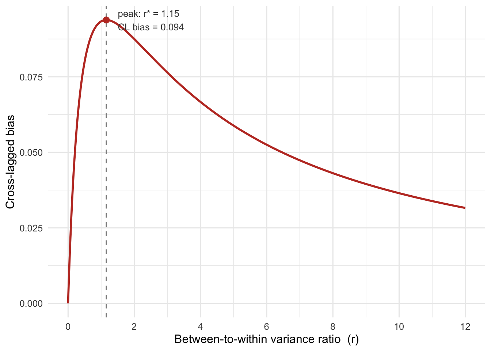

3 Bias in the Cross-Lagged Panel Model
The previous chapter introduced the cross-lagged panel model and the substantive question it purports to address – conditioning on variables in the past predicts future values. This chapter turns to its central problem, effectively ignored by the CLPM: when individuals carry stable, trait-like differences across waves, the standard CLPM conflates those differences with within-person dynamics. It may appear as though a relationship exists between past and present values, but the relationship is instead an artifact of unmoving differences between individuals (as opposed to within individuals). The chapter derives the population bias in closed form, demonstrates it with a short simulation, and sketches out a sensitivity analysis framework.
A crucial limitation of the CLPM is that it does not account for stable trait-like differences between individuals. Consider a simple example, the relationship between a personality characteristic, openness versus closed psychological orientation, and political attitudes, a right-wing political orientation Luttig (2021). Bakker, Lelkes, and Malka (2021) for instance, examines whether a psychological disposition towards openness predicts a right-wing political orientation, or whether a right-wing political orientation predicts a psychological disposition towards openness.
Political orientations are generally stable (Jennings and Niemi 1975; Goren 2005; Ansolabehere, Rodden, and Snyder 2008). It is also well regarded that personality traits are stable over time, and partially heritable (Costa and McCrae 1988; Roberts, Walton, and Viechtbauer 2006; Hatemi and Verhulst 2015).
The CLPM does not account for this time-invariant stability. It implicitly assumes that all variation in the observed variables is time-varying, and that there are no stable, time-invariant effects.
Following Hamaker, Kuiper, and Grasman (2015) and Usami (2021), the observed variables might be further decomposed into a time-invariant trait component and a time-varying component.
\[ \begin{eqnarray} x_{it} = \mu_{x,t} + I_{x,i} + x^*_{x,it} \\ y_{it} = \mu_{y,t} + I_{y,i} + y^*_{y,it} \end{eqnarray} \]
where \(\mu_{x,t}\) and \(\mu_{y,t}\) are time-specific means, and \(x^*_{it}\) and \(y^*_{it}\) are person-specific deviations from wave-specific means (Usami, Murayama, and Hamaker 2019; Usami, Hayes, and McArdle 2015; Usami 2021).
Figure 3.1 provides a visual representation of a modified version of the CLPM with time-invariant trait components.
To demonstrate precisely why the CLPM will produce biased estimates, it is important to trace how stable unit effects, \(I_x\) and \(I_y\), bias the autoregressive and cross-lagged parameters, should a researcher proceed to fit a standard CLPM ignoring unit effects. What if one opts to fit Figure 2.1 but Figure 3.1 is the true data generating model?
\[ \begin{align} x_{it} &= \hat{b}_{xx}\,x_{i,t-1} + \hat{b}_{yx}\,y_{i,t-1} + e_{x,it} \\ y_{it} &= \hat{b}_{yy}\,y_{i,t-1} + \hat{b}_{xy}\,x_{i,t-1} + e_{y,it} \end{align} \]
The conventional interpretation of the CLPM coefficients are that \(\hat{b}_{xx}\), captures the autoregressive effect of \(x\) on itself, and \(\hat{b}_{yy}\) does the same for \(y\). On the other hand, \(\beta_{yx}\) captures the cross-lagged effect of \(y\) on \(x\), and \(\hat{b}_{xy}\) captures the cross-lagged effect of \(x\) on \(y\).
3.0.1 What Economists have Said for a Bit
This general problem – stable unit effects in panel data – have been recognized for economists for decades. The issue is that when unit effects are present, this generates a non-zero correlation between the regressors and the error terms, leading to biased and inconsistent estimates. Only in the absence of unit effects, should the standard CLPM retrieve unbiased estimates. An immediate solution might be to include the unit effects in the model – by subtracting the unit means from each variable, or equivalently, by including a dummy for the units in the regression (what is colloquially referred to as “fixed effects”). While this approach is reasonable in the presence of unit effects, it quickly becomes problematic when including lagged realizations of the dependent variable in the regression equation. And unfortunately, this contributes to bias in short panels, a problem known as the dynamic panel bias or Nickell bias (Nickell 1981). The bias is a mechanical artifact of the estimation procedure.
The bias can be understood through a simple scenario. To control for unit effects, a researcher subtracts the unit means from each variable (the within transformation). However, because of the panel structure, each unit mean (\(\eta_i\)) is itself a function of the unit fixed effect, plus the wave specific errors (the within effect).
\[ \bar{y}_i = \frac{1}{T}\sum_{t=1}^{T}\left(\eta_i + \sum_{s=0}^{\infty}\rho^s\varepsilon_{i,t-s}\right) \]
But now the demeaned lagged dependent variable contains past errors that overlap with the error term, thereby producing non-zero correlation between the regressors and the error terms, and once again, biased and inconsistent estimates. Incidentally, Dynamic panel bias decreases as \(T\) increases, and is most problematic in short T panels. The bias is \(O(1/T)\); meaning that it decreases as \(T\) increases (Nickell (1981)).
Anderson and Hsiao (1981) provide an alternative approach to confront unit effects through first-differencing and using lagged variables as instruments. Arellano and Bond (1991) develop a gmm approach, which uses varying lags as instruments (aslo Blundell and Bond (1998), Baltagi (2013)). Other “fixed effects” estimators Bollen and Brand (2010) show that SEM rather than GMM can be used to estimate the dynamic panel effects – the autoregressive and cross lagged in the CLPM.
We return to these approaches later in the book. But for now, suffice it to say that these issues have been documented in the econometrics literature for at least 45 years. Only recently has a there emerged a clear bridge connecting the econometrics literature with the SEM literature, which we build upon. Lüdtke and Robitzsch (2022) provide a useful overview.
3.0.2 The Causal Interpretation
Another way to demonstrate the problem inherent in the CLPM is to consider the causal interpretation of the model. The causal parameters of interest in the CLPM are the cross-lagged effects. Lüdtke and Robitzsch (2022) provide a causal interpretation of CLPM, among other models. In particular, the CLPM might be thought of as a means of estimating a dose-response relationship – how much does \(y_t\) change for a one unit increase of \(x\) at time \(t-1\)? Each lagged variable can be thought of as a continuous treatment and the contemporaneous variable as the outcome. Importantly, let \(Y_t(x)\) be the potential value of \(y_{it}\) had the treatment \(x_{i,t-1}\) been set to level \(x\). Symmetrically, let \(X_t(y)\) be the potential value of \(x_{it}\) under \(y_{i,t-1}=y\). \(\tau_{x\to y}\) and \(\tau_{y\to x}\) represent the causal effects parameters of interest, the expected change in the outcome per unit change in the lagged treatment.
\[ \tau_{x\to y} \equiv E\!\left[\frac{\partial\, Y_t(x)}{\partial x}\right] = E\big[Y_t(x+1)-Y_t(x)\big], \qquad \tau_{y\to x} \equiv E\!\left[\frac{\partial\, X_t(y)}{\partial y}\right] = E\big[X_t(y+1)-X_t(y)\big]. \]
Assuming a linear effect, \(\tau_{x\to y}\) and \(\tau_{y\to x}\) are estimated using the structural cross-lagged slopes from the CLPM. But here’s the rub. To identify \(\tau\) one must make the assumption of conditional ignorability. The lagged treatment values must effectively be as-good-as-randomly-assigned, conditional on confounders. This seems implausible. If \(I_x\) influences \(y_{it}\) and is correlated with \(I_y\) – it serves as a confounder and opens a “back-door” path to the outcome.
\(\tau_{x\to y}\) and \(\tau_{y\to x}\) can be estimated using least squares regression. However, the CLPM regression of \(x_t\) on \(x_{t-1}\) and \(y_{t-1}\) does not condition on \(I_x\) or \(I_y\), so this path is left open and the autoregressive and cross lagged parameters now include both state and trait effects.
And the problem is the same: the CLPM does not account for stable, time-invariant unit effects. The CLPM is a model of the state effects, but the trait effects are left unblocked, and since they influence both the lagged treatment and the contemporaneous outcome, they confound the causal effect of interest.
3.0.3 The Intraclass Correlation
I understand the problem in terms of the Intraclass Correlation(ICC), the measure we always report in a multilevel model to show how much the data are subject to “clustering” around the unit. The ICC can be a useful diagnostic, as it decomposes the variance of the observed variables into the stable between and time-varying within components.
\[ \begin{aligned} {Var}(x_{it}) &= \text{Var}(I_{x,i}) + \text{Var}(x^*_{it})\\ {Var}(y_{it}) &= \text{Var}(I_{y,i}) + \text{Var}(y^*_{it}) \end{aligned} \]
The ICC is the proportion of the total variance attributable to the unit: \(\text{ICC}_x \equiv \sigma^2_{I_x}/(\sigma^2_{I_x} + \sigma^2_{x^*})\), with \(\text{ICC}_y\) defined analogously. The intraclass correlation plays an important role in understanding the nature of bias in the CLPM.
This is my understanding of its usefulness for the CLPM.Recall that the CLPM makes no distinction between trait and state effects: the variances of both \(x\) and \(y\) are composites of stable unit effects and time-varying departures from that trait. This trait-state distinction unspecified.
Yet, say the structural parameters – the cross lagged and autoregressive structure – are captured with a least squares regression model.
\[ \begin{aligned} x^*_{it} &= \beta_{xx}\,x^*_{i,t-1} + \beta_{yx}\,y^*_{i,t-1} + e_{x,it} \\ y^*_{it} &= \beta_{yy}\,y^*_{i,t-1} + \beta_{xy}\,x^*_{i,t-1} + e_{y,it} \end{aligned} \]
From linear regression, the least squares estimates of \(\beta\) will only be unbiased and consistent if there is no covariance between the error terms and the regressors. In the CLPM , this only occurs if the \(var(I_x)\) and \(var(I_y)\) are zero and \(\text{Cov}(I_x, I_y) = 0\). Otherwise, it can be shown that the estimates will be biased in a manner that is proportional to the variance in \(y\) and \(x\) attributable to a stable, underlying trait.
3.1 Deriving the Bias in the CLPM
A key – perhaps questionable – assumption below is that the trait and state components are orthogonal. Say one estimates a CLPM model. And suppose y is political ideology and x is a closed or rigid cognitive style. If one or both of these variables is driven by a stable trait – there exist nonzero variance across units – then:
- The AR paramters are biased proportional the the variance in \(x\) and \(y\) attributable to the stable, underlying trait
- The CL parameters are biased when the stable traits are correlated across units. The bias is proportional to the covariance between the stable traits.
And that’s pretty much it. The AR parameters are biased by the variances, CL by the covariances.
The multivariate CLPM estimates two lagged effects simultaneously, so every coefficient is a partial slope, and if standardized, equivalent to the partial correlation (see Rogosa (1980) for a classic critique of the partial correlation parameters in the CLPM). Start with the the classic linear regression model, and to keep things compact, stack the \(x_{it}\) and \(y_{it}\) variables into a vector \(\mathbf z_{it} = (x_{it}, y_{it})'\).
\[ \mathbf B = X'X^{-1}X'Y = \text{Cov}(\mathbf z_{it}, \mathbf z_{i,t-1})\,\text{Var}(\mathbf z_{i,t-1})^{-1} = \mathbf C\,\mathbf S^{-1} \]
On the right hand side, we can construct the covariance matrices \(\mathbf C\) and \(\mathbf S\) as functions of the trait and state components. In particular, define the following matrices (along with \(\mathbf I\), the identity matrix) to define the bias in the CLPM, differentiate the between and within effects.
Between Effects: \(\boldsymbol\Omega = \text{Var}(\mathbf I_i)\): This is the trait (between-person) covariance matrix. On the diagonals are trait variances \(\sigma^2_{I_x}, \sigma^2_{I_y}\) and on the off-diagonal is the trait covariance \(\sigma_{I_xI_y}\). Call \(x\) closed personality and \(y\) (right-wing ideology) maybe – and this matrix represents the between-person (co)variability in the aspect of these ideology and personality that does not change over the course of a panel.
Within Effects: \(\boldsymbol\Psi = \text{Var}(\mathbf z^*_{it})\) — the within-person covariance matrix, which is formed from the wave-specific deviations from the trait. This is the dynamic part of the model, allowing one to test whether a change in one variable at \(t-1\) translates to a change in another at time \(t\). Returning to the example of closed personality and right-wing ideology, this matrix captures the variability in the change in these variables over time – for instance, if one shifts towards a right leaning orientation at time \(t-1\), does that predict a shift towards a more closed personality at time \(t\)?
Within Effects: \(\mathbf B^{\text{true}}\) — this matrix is the dynamic AR and CL parameters, the true within-person dynamics: autoregressions on the diagonal, cross-lags off the diagonal. These are the parameters necessary to estimate the causal effects of interest, the \(\tau\)’s.
3.1.1 No Separation of Trait and State in the CLPM
Arellano and Bond (1991), Usami, Hayes, and McArdle (2015), and Usami (2021), as well as Hamaker, Kuiper, and Grasman (2015) show that the CLPM is a combination of the trait and state components, and failing to separate them contributes to based estimates.
We build on Usami (2021)’s work showing that CLPM is a restrictive variant of a larger class of models. It’s restrictive in the sense it never separates \(\boldsymbol\Omega\) and \(\boldsymbol\Psi\). Instead, the data \(x\) and \(y\) is a combination of these two components.
To identify the model, we need to calculate the inverse of the variance matrix of the lagged regressors. Recall from OLS that the regression coefficients are a function of the covariance of the regressor and outcome scaled to the variance of the regressors. The covariance of of the regressor (lagged \(x\) and \(y\)) is \(\mathbf S\), the inverse of the variance of the regressors is \(\mathbf S^{-1}\), and the covariance between the regressors and the outcomes, \(\mathbf C\). This is equivalent to \(\mathbf (X^TX^{-1})\) as in \(\mathbf y = \mathbf X\boldsymbol\beta + \mathbf e = (\mathbf X^T\mathbf X)^{-1}\mathbf X^T\mathbf y\).
Starting with the variances, the variance of the lagged regressors is a combination of the trait and state components.
\[ \mathbf S \equiv \text{Var}(\mathbf z_{i,t-1}) = \boldsymbol\Omega + \boldsymbol\Psi \]
And,the covariances between the lagged regressors and the outcome is also a combination of the trait and state components.
\[ \mathbf C \equiv \text{Cov}(\mathbf z_{it}, \mathbf z_{i,t-1}) = \boldsymbol\Omega + \mathbf B^{\text{true}}\boldsymbol\Psi \]
The important thing to note is the separability of trait and state effects – they are by construction orthogonal, where the trait contributes only to \(\boldsymbol\Omega\). This may be an untenable assumption in practice.
Say the lagged regressor is authoritarianism. If authoritarians are more rigid, unlikely to change from wave to wave, this assumption is violated.
The slopes are calculated – the AR and CL parameters – by regressing \(z_{it}\) on \(z_{i,t-1}\).
\[ \hat{\mathbf B}^{\text{CLPM}} = \mathbf C\,\mathbf S^{-1} \]
We can decompoase both the \(\mathbf S\) and \(\mathbf C\), into “between” (trait) and “within” (state) components. The \(\mathbf C\) matrix represents the covariances between the lagged regressors and the outcomes. If there is a trait variance component in both \(x\) and \(y\) and these trait components are correlated, this will produce bias in both the autoregressive and cross-lagged parameters. And both matrices can be further expressed as functions of these components, with a construction that generally follows how one demonstrates the linear regression coefficients are biased if regressors are endogenous.
Start from \(\hat{\mathbf B}^{\text{CLPM}} = \mathbf C\,\mathbf S^{-1}\) but just substitute the two variance components above. The within matrix is simply the total variance minus the between variance (we don’t need to specify it differently, as long as we know the total variance and the between variance): \(\boldsymbol\Psi = \mathbf S - \boldsymbol\Omega\), so that,
\[ \mathbf C = \boldsymbol\Omega + \mathbf B^{\text{true}}\boldsymbol\Psi = \boldsymbol\Omega + \mathbf B^{\text{true}}(\mathbf S - \boldsymbol\Omega) = \mathbf B^{\text{true}}\mathbf S + (\mathbf I - \mathbf B^{\text{true}})\boldsymbol\Omega . \]
Now post-multiply by \(\mathbf S^{-1}\). The first term collapses to \(\mathbf B^{\text{true}}\), and everything that is left over becomes the bias:
\[ \hat{\mathbf B}^{\text{CLPM}} = \mathbf B^{\text{true}} + \bigl(\mathbf I - \mathbf B^{\text{true}}\bigr)\,\mathbf V, \qquad \mathbf V \equiv \boldsymbol\Omega\,\mathbf S^{-1}. \]
The bias is carried by \(\mathbf V = \boldsymbol\Omega\,\mathbf S^{-1}\). It’s just the trait covariance matrix divided by the total covariance matrix…it’s like a matrix version of the ICC, including between variances and covariances.
Note that if there is no trait variance (\(\boldsymbol\Omega=\mathbf 0\) (there is thus no trait covariance) then \(\mathbf V=\boldsymbol\Omega\mathbf S^{-1}=\mathbf 0\)), the bias goes away, and the CLPM retrieves the true dynamic parameters. Likewise, if there is trait variance, but no covariance, then the CL parameter will be correct. When a trait component is present, the degree by which the parameters are biased depends on the size of the trait component – the ICC, or equivalently ratio of trait to state variance – and the true dynamic parameters.
- Diagonal of \(\mathbf V\). This represents from the trait variances, the diagonal of \(\boldsymbol\Omega\)). It will inflate the autoregressive parameters .
- Off-diagonal of \(\mathbf V\). The trait covariances, the off-diagonal of \(\boldsymbol\Omega\). Setting \(\mathbf B^{\text{true}} = \mathbf 0\) leaves \(\hat{\mathbf B}^{\text{CLPM}} = \mathbf V\), an entirely spurious cross-lag from trait covariance alone.
3.2 Simulation Demonstration
So, the bias is proportional to the size of the trait component – how much of the total variance is defined by the between-person trait. This can be demonstrated with the crossLagR package and a simple simulation. We simulate data from a four-wave panel with the following parameter values.
| Quantity | Value |
|---|---|
| waves | 4 |
| n_obs | 3000 |
| \(\sigma_{x^*}\) | 0.5 |
| \(\sigma_{I_x}\) | Varies |
| \(\sigma_{I_y}\) | Varies |
| \(b^{True}_{xx}\) | 0.30 |
| \(b^{True}_{yy}\) | 0.30 |
| \(b^{True}_{yx}\) | 0.00 |
| \(b^{True}_{xy}\) | 0.00 |
| \(\rho_I\) | 0.5 |
So we’re using the package estimate functions to generate lavaan syntax, then using lavaanify to extract the parameter table, and then modifying the starting values of the parameters to create a population model with a specified between-to-within variance ratio.

The autoregressive bias is monotonic – increasing the trait variance inflates the AR estimate towards 1. The cross-lagged bias is more complicated. It is zero when there is no trait variance, it peaks and then returns to zero. Below it becomes clear that this peak is simply a function of \(rho_I\), the shared variance between trait x and trait y.
3.3 The Bias Function
We might want to ask questions like, “if the true cross-lag coefficient were zero, and the trait correlation were rho_I, how much trait variance would produce a reported effect?” The sensititivity analysis proposes an as-if scenario: What would we expect the degree of bias to be given a pre-specified degree of trait-(co)variance.
First, recall the bias function, which is just a generalization of the classic omitted-variable-bias formula (Greene 2018; Wooldridge 2010).
\(\hat{\mathbf B}^{\text{CLPM}} - \mathbf B^{\text{true}} = (\mathbf I - \mathbf B^{\text{true}})\,\mathbf V\)
clpmBias(7, 0.3, rho_i = 0.5) bw_ratio ar rho_i icc ar_bias ar_bias_pct cl_bias cl_bias_pct
1 7 0.3 0.5 0.875 0.5917874 197.2625 0.047343 NAThe important thing to note is that the bias is a function of the trait covariance matrix \(\boldsymbol\Omega\) and the total covariance matrix \(\mathbf S\). We can just program thi into an R function that calculates the bias at user specified levels of trait variance, trait covariance, and true AR and CL parameters.
crossLagR::clpmBias() takes input assuming that the true-cross lagged parameter is zero – if this is not the case, one can pass the CL and AR parameters to the bias function in crossLagR::clpmCLBias(), which generalises the formula to a non-zero true cross-lag and calculates the degree of bias.
Below , we vary the cross lag parameter from 0 to 0.10, and calculate the degree of bias at a low level of trait variance (between-to-within ratio = 0.01), so there’s effectively no unit clustering.
varying_parameters <- clpmCLBias(
bw_ratio = 0.01,
ar = 0.3,
cl = c(0, 0.02, 0.05, 0.10),
rho_i = 0.5,
expand = TRUE,
verbose = TRUE
)
round(
varying_parameters[, c("cl", "ar_pop", "cl_pop",
"ar_bias", "ar_bias_pct",
"cl_bias", "cl_bias_pct")],
3
) cl ar_pop cl_pop ar_bias ar_bias_pct cl_bias cl_bias_pct
1 0.00 0.307 0.003 0.007 2.305 0.003 NA
2 0.02 0.307 0.023 0.007 2.258 0.003 15.726
3 0.05 0.307 0.053 0.007 2.194 0.003 5.445
4 0.10 0.306 0.102 0.006 2.097 0.002 2.029crossLagR::cl_bias_peak_ratio() calculates the between-to-within variance ratio \(r^\star\) at which the cross-lagged bias peaks. From the figures above, it’s clear this is a non-monotonic function. So, fixing \(b^{\text{true}}\) and \(\rho_I\), where does the peak actually occur?
The location of the peak is can be found by differentiating the bias function, assuming \(\rho_I \neq 1\) and \(r > 0\), \(f'(r)=0\) is \(r^\star = 1/\sqrt{1-\rho_I^2}\). In other words, (1) the peak of the function is independent of the true AR parameter, and (2) the peak is a function of the trait correlation \(\rho_I\). The more shared trait variance, the largest the bias. This means we know the maximum bias that can be expected for a given trait correlation. In a sense we can say – this is the worst-case scenario; the maximum amount of bias to emerge from fitting a CLPM and ignoring the trait-state distinction is \(r^\star\).
Take this simple simulation below, which builds off the one from above, using the following parameter table:
| Quantity | Value |
|---|---|
| waves | 4 |
| n_obs | 3000 |
| \(\sigma_{x^*}\) | 0.5 |
| \(\sigma_{I_x}\) | Varies |
| \(\sigma_{I_y}\) | Varies |
| \(b^{True}_{xx}\) | 0.30 |
| \(b^{True}_{yy}\) | 0.30 |
| \(b^{True}_{yx}\) | 0.00 |
| \(b^{True}_{xy}\) | 0.00 |
| \(\rho_I\) | 0.5 |
Instead, vary the parameter values for the cross-lag, fix the AR parameter at values above, assuming $
# rho_I and true_vals come from `bias-demo-setup` above; r_star is the
# trait amount at which CL bias peaks for this rho_I.
artifact_peak <- clpmCLBias(
bw_ratio = cl_bias_peak_ratio(rho_i = rho_I),
ar = true_vals[["ar_x"]],
cl = c(0, 0.02, 0.05, 0.10),
rho_i = rho_I,
expand = TRUE,
verbose = TRUE
)
round(
artifact_peak[, c("cl", "ar_pop", "cl_pop",
"ar_bias", "ar_bias_pct",
"cl_bias", "cl_bias_pct")],
3
) cl ar_pop cl_pop ar_bias ar_bias_pct cl_bias cl_bias_pct
1 0.00 0.650 0.094 0.350 116.667 0.094 NA
2 0.02 0.647 0.102 0.347 115.799 0.082 408.175
3 0.05 0.644 0.113 0.344 114.592 0.063 126.761
4 0.10 0.639 0.133 0.339 112.844 0.033 32.791There are a few additional functions, cl_bias_peak_ratio(). This one is pretty simple, also used a lot, and it’s just \(r^\star = 1/\sqrt{1-\rho_I^2}\). So, let’s simply calculate that point. Then we’ll do two things: (1) calculate the amount of bias at that point, and (2) calculate a tipping point. Understanding the former is important for the latter.
To calculate the maximum amount of bias, this is again just the peak of teh bias function, and is exclusively a function of the trait correlation \(\rho_I\), which we square to create an \(R^2\) variance in one explained by the other, standardized covariance.
Take the following example. Let’s assume, from the parameters above, that we want to explore bias in the cross lagged parameter. Here’s how to do that – I think –
- Assume a true value of the AR parameter (from table above).
- Assume no true cross-lagged effect.
- Calculate \(r^\star\), the point at which bias is maximized, given the trait correlation \(\rho_I\).
- Calculate the bias at that point, which is the maximum bias possible for that \(\rho_I\).
This asks an interesting question: say we ignore the trait-state distinction, and fit the CLPM do the data. Though we’ve ignored the distinction, does it really matter? What’s the degree of bias produced by the trait-state confounding? How large is the bias in relation the the reported cross-lagged effect?

3.4 Functions Used in This Chapter
| Function | What it does |
|---|---|
clpmBias() |
Population AR and CL bias of the CLPM under an RI-CLPM truth, assuming the true cross-lag is zero. |
clpmCLBias() |
Generalizes clpmBias() to a non-zero true cross-lag: returns the population CLPM AR/CL estimate and bias, optionally under indicator measurement error. |
clpmArtifactTipping() |
Inverts clpmCLBias()): given an observed CLPM cross-lag, solves for the trait-variance ratio at which that estimate would be reproduced as pure artifact. |
cl_bias_peak_ratio() |
Closed-form variance ratio \(r^\star = 1/\sqrt{1-\rho_I^2}\) at which the cross-lagged bias peaks. |
plot_cl_bias_peak() |
Plots CL bias against the between-to-within variance ratio, marking the peak at \(r^\star\). |
plot_cl_bias_surface() |
Plots the CL bias surface across the variance ratio and the true autoregressive parameter, with a ridge line at \(r^\star\). |
Anderson, T. W., and Cheng Hsiao. 1981. “Estimation of Dynamic Models with Error Components.” Journal of the American Statistical Association 76 (375): 598–606. https://doi.org/10.1080/01621459.1981.10477691.
Ansolabehere, Stephen, Jonathan Rodden, and James M. Snyder. 2008. “The Strength of Issues: Using Multiple Measures to Gauge Preference Stability, Ideological Constraint, and Issue Voting.” American Political Science Review 102 (2): 215–32. https://doi.org/10.1017/S0003055408080210.
Arellano, Manuel, and Stephen Bond. 1991. “Some Tests of Specification for Panel Data: Monte Carlo Evidence and an Application to Employment Equations.” The Review of Economic Studies 58 (2): 277–97. https://doi.org/10.2307/2297968.
Bakker, Bert N., Yphtach Lelkes, and Ariel Malka. 2021. “Reconsidering the Link Between Self-Reported Personality Traits and Political Preferences.” American Political Science Review 115 (4): 1482–98. https://doi.org/10.1017/S0003055421000605.
Baltagi, Badi H. 2013. Econometric Analysis of Panel Data. 5th ed. Chichester, UK: John Wiley & Sons.
Blundell, Richard, and Stephen Bond. 1998. “Initial Conditions and Moment Restrictions in Dynamic Panel Data Models.” Journal of Econometrics 87 (1): 115–43. https://doi.org/10.1016/S0304-4076(98)00009-8.
Bollen, Kenneth A., and Jennie E. Brand. 2010. “A General Panel Model with Random and Fixed Effects: A Structural Equations Approach.” Social Forces 89 (1): 1–34.
Costa, Paul T., and Robert R. McCrae. 1988. “Personality in Adulthood: A Six-Year Longitudinal Study of Self-Reports and Spouse Ratings on the NEO Personality Inventory.” Journal of Personality and Social Psychology 54 (5): 853–63. https://doi.org/10.1037/0022-3514.54.5.853.
Goren, Paul. 2005. “Party Identification and Core Political Values.” American Journal of Political Science 49 (4): 881–96. https://doi.org/10.1111/j.1540-5907.2005.00161.x.
Greene, William H. 2018. Econometric Analysis. 8th ed. New York, NY: Pearson.
Hamaker, Ellen L., Rebecca M. Kuiper, and Raoul P. P. P. Grasman. 2015. “A Critique of the Cross-Lagged Panel Model.” Psychological Methods 20 (1): 102–16. https://doi.org/10.1037/a0038889.
Hatemi, Peter K., and Brad Verhulst. 2015. “Political Attitudes Develop Independently of Personality Traits.” PLOS ONE 10 (3): e0118106. https://doi.org/10.1371/journal.pone.0118106.
Jennings, M. Kent, and Richard G. Niemi. 1975. “Continuity and Change in Political Orientations: A Longitudinal Study of Two Generations.” American Political Science Review 69 (4): 1316–35. https://doi.org/10.2307/1955291.
Lüdtke, Oliver, and Alexander Robitzsch. 2022. “A Comparison of Different Approaches for Estimating Cross-Lagged Effects from a Causal Inference Perspective.” Structural Equation Modeling: A Multidisciplinary Journal 29 (6): 888–907.
Luttig, Matthew D. 2021. “Reconsidering the Relationship Between Authoritarianism and Republican Support in 2016 and Beyond.” The Journal of Politics 83 (2): 783–87. https://doi.org/10.1086/710145.
Nickell, Stephen. 1981. “Biases in Dynamic Models with Fixed Effects.” Econometrica 49 (6): 1417–26. https://doi.org/10.2307/1911408.
Roberts, Brent W., Kate E. Walton, and Wolfgang Viechtbauer. 2006. “Patterns of Mean-Level Change in Personality Traits Across the Life Course: A Meta-Analysis of Longitudinal Studies.” Psychological Bulletin 132 (1): 1–25. https://doi.org/10.1037/0033-2909.132.1.1.
Rogosa, David. 1980. “A Critique of Cross-Lagged Correlation.” Psychological Bulletin 88 (2): 245–58. https://doi.org/10.1037/0033-2909.88.2.245.
Usami, Satoshi. 2021. “On the Differences Between General Cross-Lagged Panel Model and Random-Intercept Cross-Lagged Panel Model: Interpretation of Cross-Lagged Parameters and Model Choice.” Structural Equation Modeling: A Multidisciplinary Journal 28 (3): 331–44.
Usami, Satoshi, Timothy Hayes, and John J McArdle. 2015. “On the Mathematical Relationship Between Latent Change Score and Autoregressive Cross-Lagged Factor Approaches: Cautions for Inferring Causal Relationship Between Variables.” Multivariate Behavioral Research 50 (6): 676–87.
Usami, Satoshi, Kou Murayama, and Ellen L. Hamaker. 2019. “A Unified Framework of Longitudinal Models to Examine Reciprocal Relations.” Psychological Methods 24 (5): 637–57. https://doi.org/10.1037/met0000210.
Wooldridge, Jeffrey M. 2010. Econometric Analysis of Cross Section and Panel Data. 2nd ed. Cambridge, MA: MIT Press.